Le développement HTML ne nécessite rien d’autre qu’un éditeur de texte. Le logiciel « bloc-notes » peut suffire mais il est souhaitable d’utiliser un logiciel plus performant comme "notepad++" "Sublime text", "Brakets" ou "Visual Studio Code" . Vous pouvez les télécharger ici :
Un navigateur est ensuite nécessaire pour visualiser les pages créées. "Mozilla Firefox", "Google Chrome", ou "Internet explorer" sont des navigateurs, très répandus.
Pour coder en HTML il faut saisir des balises, en respectant une certaine syntaxe afin que le navigateur comprenne ce que l’on veut afficher. Les balises HTML sont des mots-clés insérés entre les symboles < et >". Par exemple, tout fichier HTML contient la balise <html>. Il existe 2 types de balises, celles qui vont par paire (comme <html>, qui est « fermée » par </html> ) et celles qui sont orphelines, comme la balise <meta/> que nous verrons plus loin. Avec la convention HTML5, ces balises doivent être écrites en minuscules. On enregistrera le document dans un dossier que l’on nommera avec l’extension .html avec un nom du type page1.html. On choisira d’enregistrer ce fichier dans un dossier que l’on nommera site-internet dans le dossier documents.
Ouvrir votre éditeur de texte (notepad++ par exemple)
et saisir le texte suivant :
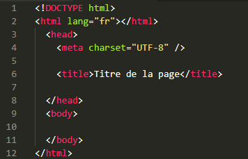
La première ligne <!doctype html> permet au navigateur de savoir que le fichier est un fichier HTML suivant la norme HTML5. Les 2 balises <html> et </html> structurent le fichier (sorte de début et de fin de page …) Entre les balises <head> et </head> on trouve les informations relatives à l’en-tête de la page et entre les balises <body> et </body> , on trouve les informations relatives au corps de la page. Entre les balises <title> et </title>, on trouve le titre de la page, qui sera affiché par le navigateur. Enfin dans la balise <meta ... /> on trouve l’information concernant le type d’encodage utilisé, le plus courant étant « utf-8 ».
Dans le menu de notepad++, dans encoding, sélectionner utf-8. La balise <meta/> possède ici un attribut, charset, qui spécifie l’encodage. Enregistrer ce fichier avec le nom page1.html dans le dossier site-internet.
Modifier le fichier précédent en ajoutant une ligne comme
ci-dessous :
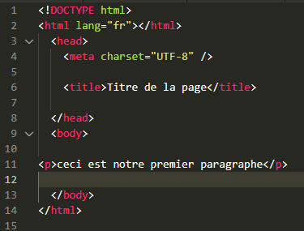
Les balises <p> et </p> (paragraphe) contiennent un texte qui sera visible à l’écran. Enregistrer le fichier, aller dans le dossier site-internet et double-cliquer sur page1.html. Avec Google Chrome par exemple, vous devriez voir ceci à l’écran :
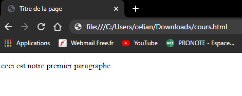
Insérer maintenant la balise <br> entre notre et premier dans le fichier précédent. Enregistrer à nouveau puis actualiser la page web. Observer alors que la balise <br> (break) a permis un retour à la ligne à l’écran.
Il est nécessaire de savoir créer des liens vers d’autres sites internet ou vers d’autres pages de notre site. Pour cela on utilise les balises et <a> et </a> . Par exemple, pour créer un lien vers le moteur de recherche google, on saisit, après la balise </p> de notre fichier :
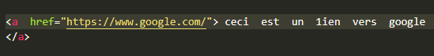
Pour créer un lien vers une autre page de notre site, page2.html par exemple, on saisit :
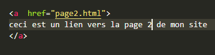
1. Ouvrir un nouveau fichier dans votre éditeur de texte et recopier le code suivant :
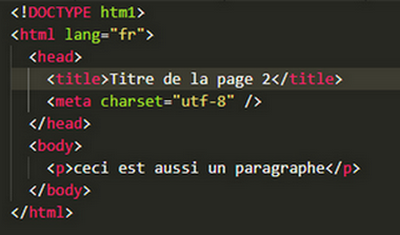
2. Enregistrer ce fichier avec le nom page2.html dans le dossier site-internet.
3. Ouvrir le fichier page1.html dans le navigateur avec l’ajout du lien vers la page 2 et tester ce lien.
4. Ajouter maintenant un lien sur la page 2 vers la page 1. Tester le résultat obtenu.
Il nous faut maintenant apprendre les balises HTML les plus courantes pour pouvoir structurer correctement nos pages.
Les titres sont très importants pour structurer un document. Les balises de titre sont toutes du type <hx> où x est un nombre compris entre 1 et 6. <h1> représente un titre de plus haut niveau que <h2> , etc … Pour reproduire la structure de ce cours sur une page web, on écrirait :
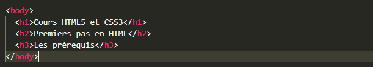
et ainsi de suite...
Une autre façon d’organiser des informations est la création de listes, numérotées ou non. Une liste numérotée est dite ordonnée. La balise correspondante est <ol> </ol> . Chacun des éléments de cette liste doit être encapsulé entre les balises <li> </li>. On peut apporter des spécifications aux listes via des attributs. Par exemple :
| Attribut | Signification | start | Précise le numéro de départ |
| reversed | La liste est numérotée dans l’ordre décroissant |
| type | Précise le type de numérotation |
Tester le code suivant :
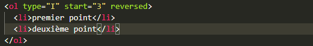
Il est possible de créer des listes à l’intérieur d’une balise <li> </li>. Il est également possible de créer des listes à puces (non numérotées) avec la balise <ul> </ul>. Chaque élément s’écrit avec la balise <li></li> comme pour les listes ordonnées.
Le style de nos pages sera réalisé à l’aide du langage CSS que l’on verra plus loin. Un peu de patience. On peut toutefois retenir la balise <center></center>. Le texte encapsulé dans ces balises sera évidemment centré sur la page web.
La balise qui permet d’insérer une image dans une page web est une balise orpheline qui a de nombreux attributs possibles :
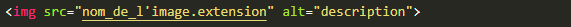
L'attribut "src" doit contenir le chemin menant à l'image cible ainsi que le nom de l'image suivit de son extension (.png / .jpg / .gif).
Remarque : si l'image à afficher se trouve dans le même dossier que la page web, il suffit d'indiquer le nom de l'image avec l'extension.
Si l'image se trouve dans un dossier "Images" au même niveau que la page web, on indiquera le chemin de l'image comme si ci-dessous :
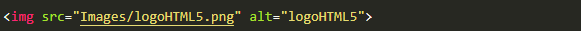
Si l'image se trouve dans un dossier "Images" parent du dossier contenant la page web, on indiquera le chemin de l'image comme ci-dessous :
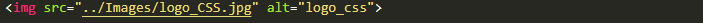
L'attribut "alt" doit contenir une brève description de l'image, au cas où une erreur surviendrai cela permettrai au navigateur d'afficher cette description.
Utiliser la baliser "img" afin d'afficher le logo HTML5 (téléchargeable ici) sur votre page.
On peut modifier sa taille avec les attributs width (largeur) et height (hauteur), dont les unités sont en pixels. Par exemple, pour afficher cette image avec une hauteur de 200 pixels, on saisira :
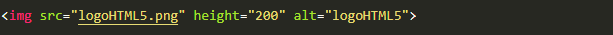
Il est possible de créer un lien (vers un autre site ou vers une autre page de notre site) en cliquant sur l’image. Pour cela il suffit de saisir (si on veut créer un lien vers la page 2 par exemple) :
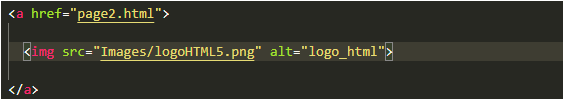
Les tableaux ont une structure de base assez simple. Ils se remplissent ligne par ligne et à l’intérieur de chaque ligne, cellule par cellule, de la gauche vers la droite.
La balise <table> </table> définit un tableau,<tr></tr> (table row) chaque ligne et à l’intérieur des lignes, les cellules sont définies par <td></td> (table data). Toute l’esthétique du tableau se fera avec le CSS. Saisir le code suivant et observer l’affichage obtenu :
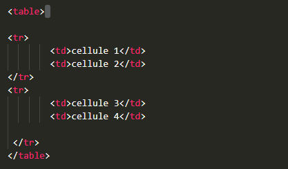
Pour fusionner plusieurs lignes dans une même colonne on utilise l’attribut rowspan. Dans l’exemple précédent si on veut fusionner les 2 cellules de la première colonne on saisit :
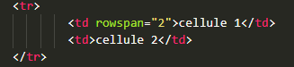
Pour fusionner plusieurs colonnes sur une même ligne on utilise l’attribut colspan. Dans l’exemple précédent si on veut fusionner les 2 cellules de la première ligne on saisit :
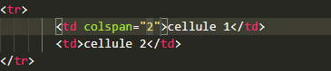
Des balises permettent de structurer la page en blocs, autrement que les simples titres ou paragraphes. Chaque division de la page, qu’elle concerne un bloc, un menu, le corps, l’entête du site, le pied de page … doit être encapsulé dans un bloc prévu à cet effet de façon à permettre une modification et une organisation simples, et surtout, à gérer efficacement les choses avec le CSS.
Pour permettre à l’utilisateur d’entrer des données (et les traiter avec JAVASSRIPT ou PHP) il est nécessaire de créer des formulaires. La balise permettant de créer un formulaire est <form> </form>.
La balise orpheline à utiliser est <input type="text">. Cette balise génère une case de texte, ayant la forme d’une ligne, dans laquelle l’utilisateur peut saisir n’importe quel texte. Les attributs de cette balise sont :
Saisir le code suivant et observer l’affichage obtenu dans le navigateur :
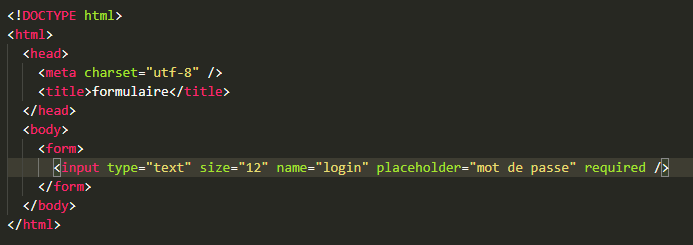
La balise orpheline à utiliser est <input type="number">. Contrairement à la balise précédente, on ne peut saisir que des nombres. De plus cette ligne est accompagnée de 2 boutons qui permettent d’augmenter ou de diminuer la valeur.
Outre les attributs name, size, placeholder et required, on peut aussi utiliser les attributs :
Dans le fichier précédent, modifier le contenu de la balise <input /> comme ci-dessous :
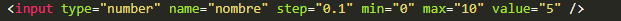
Le fonctionnement est le même que celui de la ligne de saisie, à ceci près que des caractères spéciaux (gros points, étoiles, …) masquent la saisie. La balise est <input type="password">. Les attributs sont les mêmes que ceux de la ligne de saisie.
Que serait un formulaire sans case à cocher ? On l’obtient par :
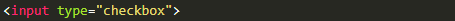
La case à cocher peut avoir 2 attributs, en plus de ceux qui sont valables pour toutes les balises des formulaires :
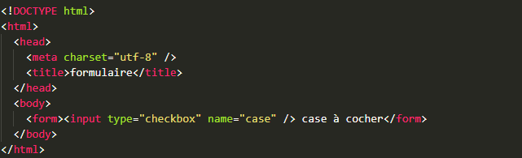
Les boutons radio sont également des cases à cocher mais ceux-ci sont groupés, et dans ce groupe, une seule case doit être cochée. Pour gérer les groupes de boutons, on attribue la même valeur à l’attribut name de chaque bouton du groupe.
On retrouve les attributs checked et value.
Pour choisir le sexe d’une personne par exemple, on génère un groupe de 2 boutons comme ci-dessous :
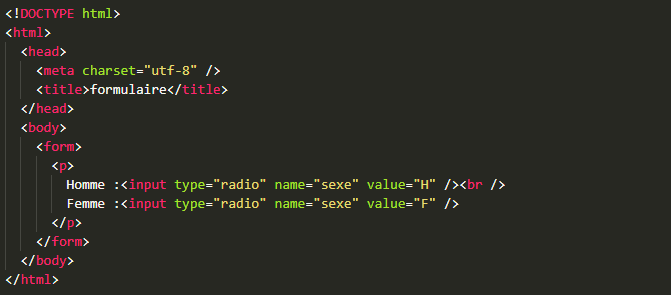
Pour créer une liste déroulante, on utilise la balise <select> </select>.
Il est possible de spécifier le nombre de valeurs affichées simultanément à l’écran avec l’attribut size et de pouvoir choisir plusieurs options avec l’attribut multiple.
Chacune des possibilités proposées dans la liste peut être ajoutée par les balises <option> </option>.
L’attribut value permet d’attribuer une valeur à chaque option de la liste et l’attribut selected permet de choisir l’option de la liste sélectionnée par défaut.
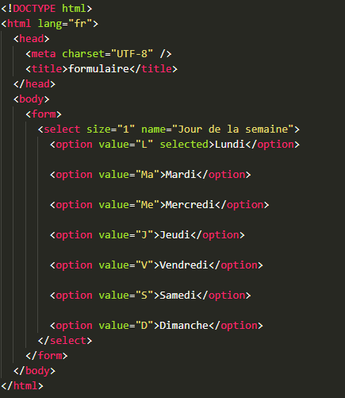
Et voici un autre exemple avec une liste « multi sélection » sur 4 lignes. Il faut appuyer sur la touche CTRL tout en cliquant pour sélectionner plusieurs propositions en même temps...
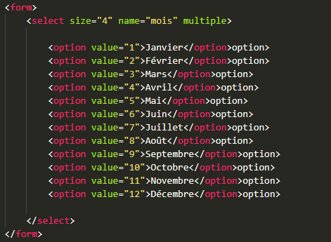
Si on veut écrire un texte, il faut utiliser la balise <textarea> </textarea>.
Il est possible de spécifier le nombre de lignes et le nombre de colonnes avec les attributs cols et rows. L’attribut maxlength permet de définir le nombre maximal de caractères de la zone. Enfin on peut écrire du texte qui sera affiché au départ dans la zone à l’ouverture de la page.
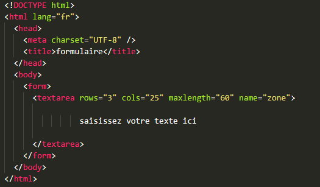